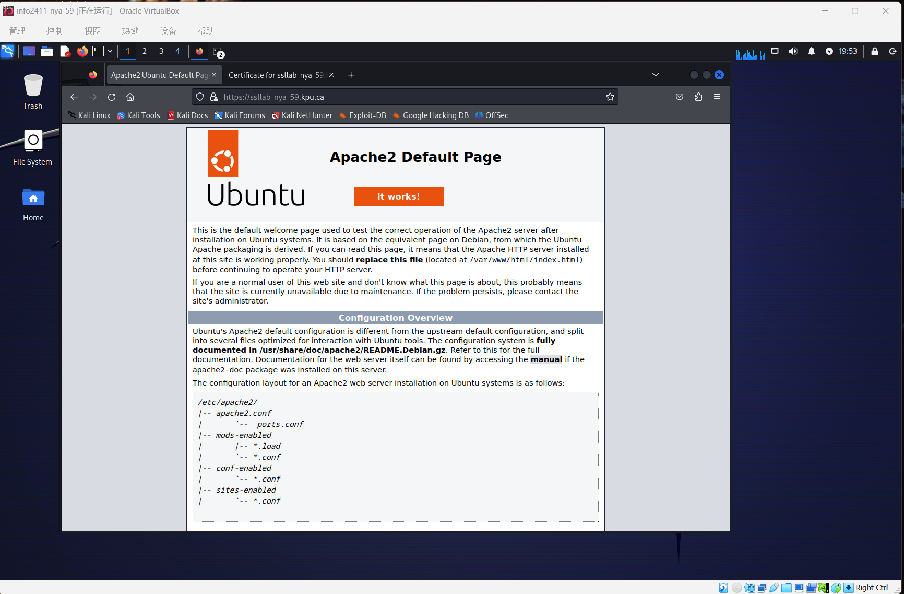
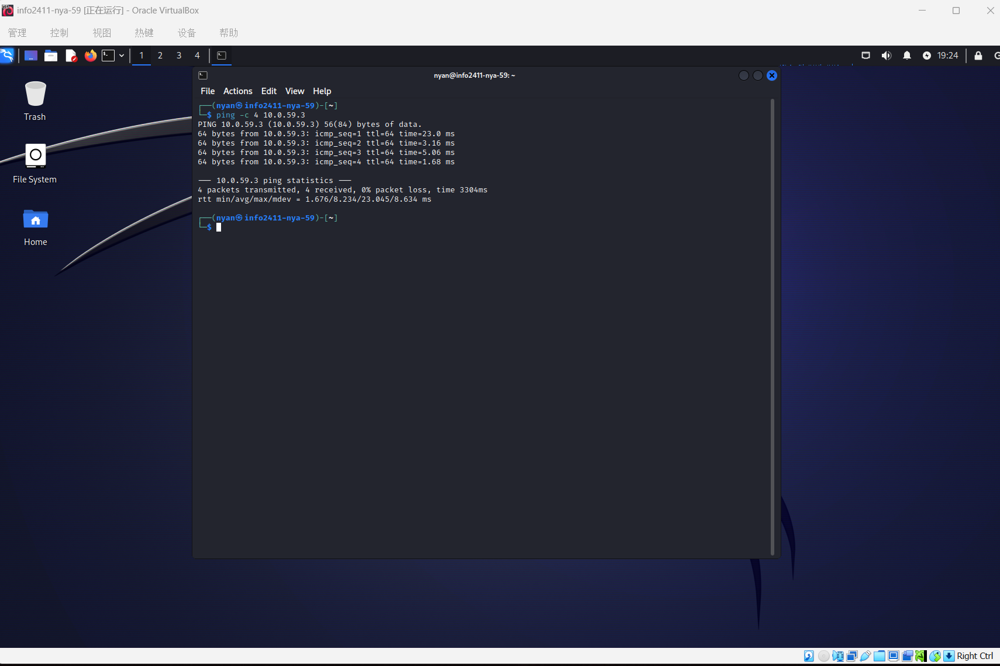

01 · 192.168.200.139
Original /24 → new /27
- Network
- 192.168.200.128
- Broadcast
- 192.168.200.159
- First usable
- 192.168.200.129
- Last usable
- 192.168.200.158
- Subnets / hosts per subnet
- 8 / 30
Original screenshots, source files and worked examples from my courses. Each section explains the task, the result and the scope of the work.
I used a Windows Server 2016 lab to organize accounts, inspect delegation and control access to shared folders through security groups.
Created and reorganized organizational units (OUs), inspected Account Operators permissions on an OU, and nested the Agents, Celebrities and Students groups in Common Access. I then checked shared-folder access using representative lab accounts.
The client in this exercise was another Windows Server 2016 VM. The domain and user roles shown below belong to the lab.


Source: my INFO 2416 Assignment 3 response, OU task 16 and Security Groups tasks 8–10. The screenshots are unchanged extracts from the report.
A course project that combines vehicle and trip inputs, a simple fuel model, price comparisons and a saved text report.
The program uses four classes: the main simulation, Car, City and GasStation. Fixed-size object arrays hold the choices. Console prompts collect the distance, passengers, weather, road conditions, air conditioning, luggage and budget.
Random traffic lights and stop signs add to the model’s fuel estimate. The program samples two different stations from three entered stations, compares prices for the vehicle’s fuel grade, checks the budget and exports the result with PrintWriter.
The unchanged source was compiled and run during this portfolio review. Both a sufficient-budget trip and an insufficient-budget trip produced text reports. The example below is an original output image from my project report.

The download contains the four original Java files, a short run guide and sample input/output. A separate review run with a manually entered 75 km distance produced 10.64 L and CAD 23.83 using fictional station prices. Random traffic makes later runs vary.
Handle non-numeric and non-finite inputs, allow a choice of output filename, and compare all entered stations. The current version uses a simplified educational fuel model, manually entered distances and prices, and randomized traffic.
Source: INFO 2313 individual project source, report and output files. The packaged Java source is unchanged; the run guide and fresh sample were added for the portfolio.
Six completed numerical examples from my subnetting worksheet, presented here in a readable format. The selected network, broadcast, host-range and count results were recalculated during this review.
Original /24 → new /27
Original /8 → new /17
Original /16 → new /19
Original /24 → new /30
Original /16 → new /24
Original /24 → new /29
In a separate guided activity, I added a PC to a supplied Cisco topology, entered static IPv4 settings and inspected OSI and Ethernet PDU details in Simulation mode. Those screenshots show settings and packet inspection; successful end-to-end connectivity was not recorded in the selected material.
Source: my INFO 1212 subnetting worksheet, Part 2, problems 1–6, and the completed Help and Navigation activity response. The worksheet and topology were supplied by the course/Cisco; the six results above are re-typeset from my answers.
I configured Apache on Ubuntu and tested it from a Kali client, using SSH, local hostname mapping and a self-signed certificate.
Connected the two VMs, configured certificate paths, enabled the SSL site and saved a configuration diff. The recorded checks include four successful ping replies, Apache’s syntax check and the HTTPS default page in the client browser.



These are saved results from a local course exercise. The certificate was self-signed and used a browser exception; it has since expired. The screenshots document the lab at that time, rather than a currently hosted service.
Source: my INFO 2411 self-signed SSL lab response, sections 1, 5 and 6. Images are unchanged originals. Private keys and full student reports are not included in the downloads.